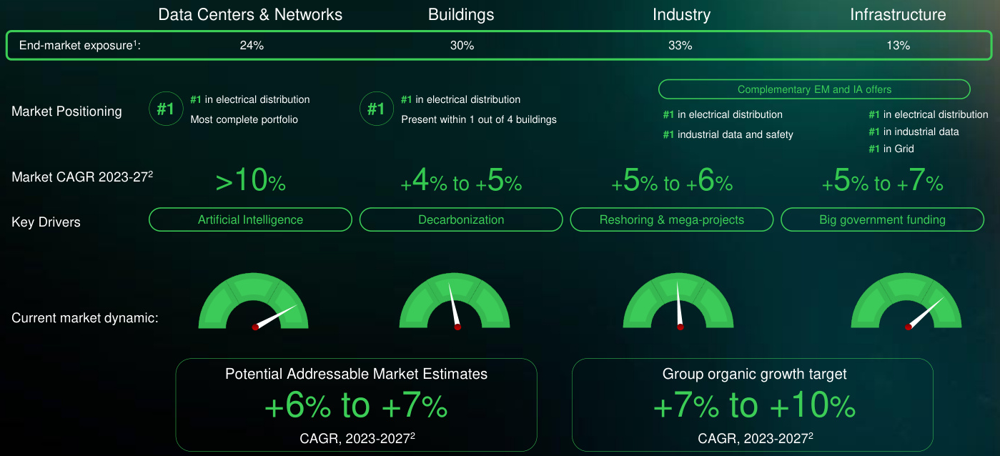
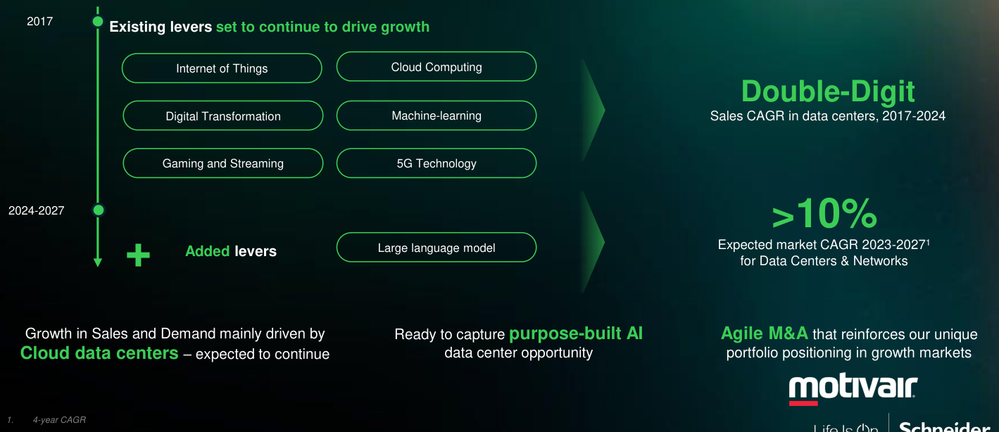
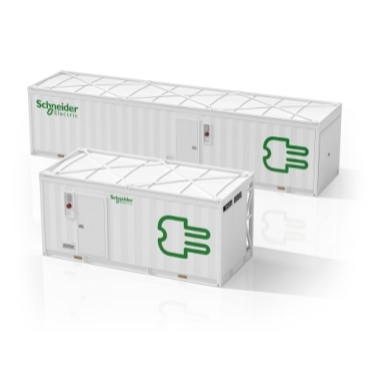

Schneider Electric (SU)
W kontekscie: Naziemny bottleneck energetyczny i sieciowy
Schneider Electric SE to francuski lider technologii energetycznej, który w narracji o orbitalnych centrach danych pojawia się od strony przeciwnej - jako jeden z głównych dostawców rozwiązujących wąskie gardło naziemne, czyli to, co napędza zainteresowanie wynoszeniem compute na orbitę. Spółka obsługuje cały łańcuch "grid-to-chip / chip-to-chiller": od rozdzielnic średniego i niskiego napięcia (switchgear MV/LV), przez zasilacze bezprzerwowe (UPS Galaxy i Smart-UPS), dystrybucję mocy i listwy PDU NetShelter, aż po szafy serwerowe i moduły prefabrykowane. To bezpośrednio adresuje problemy opisane w wątku Brak transformatorów i switchgear: lead times - braki sprzętu zasilającego i wydłużone terminy dostaw są dziś jednym z twardszych ograniczeń budowy data center, a Schneider jest po podażowej stronie tego równania.
Drugą nogą oferty jest oprogramowanie DCIM EcoStruxure IT, zarządzające infrastrukturą energetyczną i chłodzeniem w czasie rzeczywistym, oparte na globalnej bazie ponad 500 tys. instalacji EcoStruxure (Yahoo Finance, 2024). To warstwa, która spina sprzęt w jeden ekosystem i czyni Schneidera preferowanym dostawcą dla hyperscalerów oraz kolokacji - tych samych odbiorców, których rosnący apetyt na moc opisuje Zapotrzebowanie DC na moc i prognozy AI compute.
Trzeci, najświeższy element to chłodzenie. Historycznie Schneider dostarczał precyzyjne chłodzenie powietrzem (marka Uniflair), ale w 2025 r. przejął Motivair, wchodząc w chłodzenie cieczowe (liquid cooling) - kluczowe dla gęstych szaf AI, gdzie powietrze przestaje wystarczać. Rozwija to bezpośrednio temat zużycia wody i ciepła odpadowego z Woda chłodząca: zużycie, spory lokalne, susze. To właśnie ta fizyczna granica chłodzenia i zasilania na Ziemi jest jednym z argumentów przemawiających za orbitalnymi DC.
Skala spółki: w roku obrotowym FY 2025 (zakończony 31.12.2025, wyniki ogłoszone 26.02.2026) przychody wyniosły 40 152 mln EUR (+8,9% organicznie), z czego segment Energy Management - obejmujący całe portfolio data center - to 33 130 mln EUR, czyli około 82% przychodów (release-fy-results-2025.pdf, 26.02.2026). End-market Data Center & Networks odpowiadał za 30% zamówień grupy w 2025 r., wobec 24% w 2024 r. (Utility Dive, 2025), a sam segment "pure DC" to około 20% ekspozycji end-market w 2024 r. (Yahoo Finance, 2024). Dla grupy o skali ponad 40 mld EUR oznacza to rzędu 8-12 mld EUR rocznej ekspozycji na data center & networks. Wąsko rozumiane chłodzenie szaf to mniejsza część tego wolumenu - szacunki rynkowe wskazują udział data-center cooling na poziomie około 15% biznesu (Introl, 2025).
Dla inwestora: ekspozycja Schneidera na centra danych jest istotna i rosnąca (30% zamówień w 2025 r.), ale wpisana w zdywersyfikowany konglomerat o przychodach ponad 40 mld EUR - nisza ciągnie wzrost, lecz nie jest jedynym fundamentem grupy.
Materiały spółki
Grafiki z materiałów spółki / IR (prawa właściciela, użycie redakcyjne). Pełny rejestr:
Spolki/assets/_licencje.json.

1. Slajd inwestorski „Balanced end-market exposure” - pokazuje strukturę rynków końcowych, w tym Data Center & Networks (24% w 2024 r.). Źródło: materiały spółki / IR; licencja: materiały spółki / IR - prawa właściciela, użycie redakcyjne.

2. Slajd inwestorski „Data Centers end-market continues to have added levers" - ilustruje drivers wzrostu segmentu data center. Źródło: materiały spółki / IR; licencja: materiały spółki / IR - prawa właściciela, użycie redakcyjne.

3. Zdjęcie produktowe: Prefabricated Power Module - zintegrowany moduł zasilania z UPS Galaxy, switchgear i oprogramowaniem zarządzania dla data center. Źródło: download.schneider-electric.com; licencja: materiały spółki / IR - prawa właściciela, użycie redakcyjne.
Pozycja rynkowa
Schneider Electric jest globalnym liderem end-to-end infrastruktury data center, ze szczególną siłą w zasilaniu i rozdzielnicach. Według Future Market Insights prowadzi w segmencie switchgear for data centers z udziałem 18% (Future Market Insights, 2026). Przewaga polega na kompletności oferty: jako jedna z nielicznych firm Schneider łączy rozdzielnie, UPS, dystrybucję mocy, szafy, chłodzenie (powietrzne Uniflair oraz cieczowe Motivair) i oprogramowanie DCIM EcoStruxure IT w jednym ekosystemie. Dziedzictwo marek APC i Galaxy w UPS oraz baza ponad 500 tys. instalacji EcoStruxure tworzą barierę, której pojedynczy specjaliści produktowi nie odtwarzają łatwo.
Głównymi konkurentami są Vertiv, Eaton i ABB. Vertiv to specjalista chłodzenia precision cooling (marka Liebert) z udziałem około 23% w chłodzeniu DC (Introl, 2025) - tu Schneider gonił rynek i domknął lukę dopiero przejęciem Motivair. Eaton jest silny w UPS i rozdzielniach, konkurując z Schneiderem bezpośrednio w zasilaniu. W switchgear i średnim napięciu rywalami są również ABB/Hitachi Energy oraz Siemens. Oś konkurencji przebiega więc dwutorowo: kompletność ekosystemu (gdzie Schneider dominuje) kontra głębia specjalizacji w pojedynczych podzespołach (gdzie Vertiv prowadzi w chłodzeniu). Schneider jest notowany na Euronext Paris (XPAR, ticker SU), co daje inwestorom czystą ekspozycję europejską na ten łańcuch dostaw.
Ryzyka
Pierwszym ryzykiem jest cykliczność capex hyperscalerów i opóźnienia projektów AI. Znaczna część zamówień segmentu Systems pochodzi od Microsoftu, Google, Meta, kolokacji i graczy "neo-cloud". Mechanizm jest bezpośredni: nagła korekta planów inwestycyjnych AI, problemy z dostępnością mocy elektrycznej lub permittingiem (widoczne w Europie) mogą szybko spowolnić wzrost segmentu Data Center & Networks, który dziś ciągnie całą grupę. Ponieważ to właśnie ten end-market urósł z 24% do 30% zamówień w rok, jego zadyszka uderzyłaby w dynamikę najmocniej (Data Center Dynamics, 2025). Wątek ograniczeń sieci i kolejek przyłączeniowych, które realnie hamują projekty klientów Schneidera, rozwija Kolejki przyłączeniowe i ograniczenia sieci.
Drugim ryzykiem są napięcia w łańcuchu dostaw oraz taryfy i lokalizacja produkcji. Schneider realizuje około 90% sprzedaży w regionie produkcji, ale znaczna część mocy wytwórczych dla Ameryki Północnej znajduje się w Meksyku. Wzrost taryf na osi USA-Meksyk-Chiny lub braki komponentów elektrycznych wydłużają lead time - co jest szczególnie groźne w projektach DC obarczonych wysokimi karami za opóźnienia i presją na szybki time-to-market (Facilities Dive, 2024). To samo wąskie gardło dostępności sprzętu zasilającego, które ogranicza tempo budowy data center, opisuje Ziemia, lokalizacja, czas budowy (permitting) jako bottleneck.
Dla inwestora: oba ryzyka mają ten sam wspólny mianownik - przychody Schneidera coraz mocniej zależą od tempa i ciągłości budowy data center, więc każde załamanie capex AI lub zator w łańcuchu dostaw przekłada się wprost na dynamikę najszybciej rosnącego end-marketu grupy.
Powiązane spółki
Inne notowane spółki z raportu dzielące z tą firmą co najmniej jeden wątek tematyczny (wspólny rynek, technologia lub łańcuch wartości).
- Bloom Energy Corporation (BE) - Ogniwa paliwowe SOFC dla centrów danych
Wspólne wątki: Naziemny bottleneck. - Constellation Energy Corporation (CEG) - Największy operator floty jądrowej w USA (PPA z hyperskalerami)
Wspólne wątki: Naziemny bottleneck. - Eaton Corporation plc (ETN) - Zasilanie DC (UPS, switchgear) + chłodzenie (Boyd Thermal)
Wspólne wątki: Naziemny bottleneck. - GE Vernova Inc. (GEV) - Turbiny gazowe i infrastruktura sieciowa dla DC
Wspólne wątki: Naziemny bottleneck. - Oklo Inc. (OKLO) - Mikroreaktory (SMR/fission) na potrzeby DC
Wspólne wątki: Naziemny bottleneck. - Siemens Energy AG (ENR) - Turbiny gazowe i technologie sieciowe (EU)
Wspólne wątki: Naziemny bottleneck. - Talen Energy Corporation (TLN) - Energia jądrowa (Susquehanna), sąsiedztwo z DC
Wspólne wątki: Naziemny bottleneck. - Vertiv Holdings Co (VRT) - Zasilanie i precyzyjne/cieczowe chłodzenie DC
Wspólne wątki: Naziemny bottleneck.
Linkują tutaj
11 powiązanych notatek
- Mapa raportu Orbitalne / kosmiczne centra danych
- Sekcja Naziemny bottleneck energetyczny i sieciowy
- Indeks Spółki z ekspozycją na giełdy europejskie
- Spółka Bloom Energy (BE)
- Spółka Constellation Energy (CEG)
- Spółka Eaton (ETN)
- Spółka GE Vernova (GEV)
- Spółka Oklo (OKLO)
- Spółka Siemens Energy (ENR)
- Spółka Talen Energy (TLN)
- Spółka Vertiv (VRT)